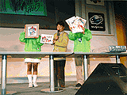

|
|

チャリティーオークション
（「東京ゲームショウ'98春」より）ステージイベントの概要をご紹介します。イベントステージ・プログラム（予定）もあわせて掲載します。 一般公開日、ゲーム音楽のライブ、トークショー、新作発表等、多彩に出展者イベントを実施
一般公開日の10日（土・祝）、11日（日）は、初の試みとして、イベントステージを出展者の方にご利用いただくことにしました。ゲーム音楽の生演奏や声優のトークショー、新作タイトルの発表など、彩り豊かに開催されます。
「TOKYOゲーム賞〜がんばれ！未来のクリエイター〜」優秀作品の発表・表彰式
10日（土・祝）は、テレビゲーム制作を学ぶ学生など、アマチュアのゲームクリエイターの皆さんが制作・応募されたゲームソフト作品の中から優秀な作品を表彰する「TOKYOゲーム賞〜がんばれ！未来のクリエイター〜」（詳しくはこちらへ）の発表・表彰式が行われます。応募作品は、46作品。その中から9作品をノミネート。最優秀賞1作品、優秀賞および審査員特別賞それぞれ2作品を選定します。
何が飛び出すか!? 『危険なクリエイター・トークバトル』
著名クリエイターのトークが人気のクリエイターズ・カンファレンスが、さらにパワーアップ。「東京ゲームショウ '98秋」では、『危険なクリエイター・トークバトル』のタイトルで開催します。ゲーム業界でもひときわ異彩を放つクリエイターからどんなトークが飛び出すか? ゲームファン必見のイベントです。
恒例、チャリティーオークション
また一般公開日には、各出展者から提供いただいたテレビゲーム関連のプレミアムグッズのチャリティーオークションを実施。また、今回は、ステージイベントの入場整理券を利用した大抽選会も同時開催します。
ビジネスデーは、バンダイ 山科会長、セガ・エンタープライゼス 入交社長による講演会と、恒例・コンパニオン・コスチュームコンテストを開催9日（金）のビジネスデーには、株式会社バンダイ取締役会長山科誠様、株式会社セガ・エンタープライゼス代表取締役社長入交昭一郎様にご講演いただきます。
「東京ゲームショウ」恒例となった、ビジネスデーのコンパニオン・コスチュームコンテスト「ベストコスチューム in TOKYO GAME SHOW '98 AUTUMN」。各出展者コンパニオンのコスチュームをユニフォーム部門とキャラクター部門の2部門で審査。各部門の優勝者および準優勝者のコスチューム写真をめぐり合い広場でパネル展示します。
| ［ビジネスデー］10月9日（金）のスケジュール | |
| 10:00 | 開場 |
| 13:00 |
講演会
|
| 16:00〜16:30 | ベストコスチューム in TOKYO GAME SHOW '98 AUTUMN |
| 17:00 | 閉場 |
| ［一般公開日］10月10日（土・祝日）のスケジュール | |
| 10:00 | 開場 |
| 10:00〜11:30 |
TOKYOゲーム賞〜がんばれ！未来のクリエイター〜 発表・表彰式
|
| 12:00〜12:30 |
とんでもクライシス！ ステージ LIVE！東京スカパラダイスオーケストラMEETSとんクラ！
|
| 13:00〜13:30 |
コナミ ステージ CLUB db 秋の桑島すぺしゃる in 東京ゲームショウ
|
| 14:00〜14:30 |
ウエップシステム ステージ ライジング・ザン〜ザ・サムライガンマン（仮）
|
| 15:00〜15:30 |
リバーヒルソフト ステージ ワールド・ネバーランド2〜プルト共和国物語〜開国発表会
|
| 16:00〜16:45 | CESAチャリティーオークション＆大抽選会 |
| 17:00 | 閉場 |
| ［一般公開日］10月11日（日）のスケジュール | |
| 10:00 | 開場 |
| 11:00〜12:30 |
危険なクリエイター・トークバトル
|
| 13:00〜13:30 |
コーエー ステージ
|
| 14:00〜14:30 |
角川書店 ステージ ゲームウォーカー・ネット in 東京ゲームショウ
|
| 15:00〜15:30 | セガ・エンタープライゼス ステージ |
| 16:00〜16:45 | CESAチャリティーオークション＆大抽選会 |
| 17:00 | 閉場 |
|
※イベントタイトルおよび内容、出演者は変更される場合があります。 （1998年10月1日現在） |
| TOKYO GAME SHOW Information トップに戻る |
| 掲載された画像その他の内容の無断転載はお断りいたします。 当ホームページで公開された商品名は一般に各社の登録商標です。 |